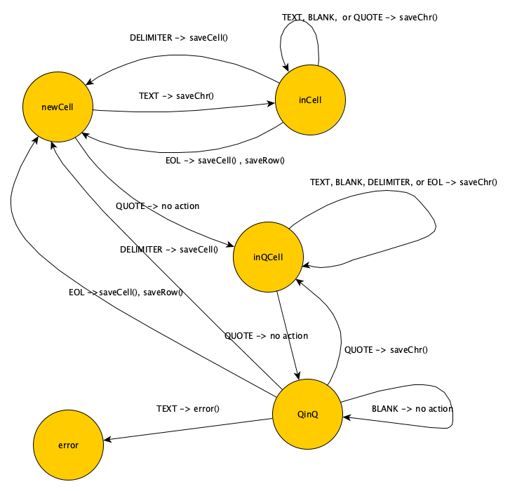

- The delimiter between cells must be a single character
- If a cell starts with an odd number of quotes it will be a "quoted cell" and must close the quotes to end the cell
- Quotes can be included in a quoted cell - 2 consecutive quotes are included in the cell contents as a single quote.
- a quote may appear within a unquoted cell and will be treated as a normal character
- New line will create a new row - unless it occurs with a cell in quotes - it will then be included as a character in that cell
- Delimiters may be included within quoted cells
The states are in circles. The edges point to the next state based on the character type in the CSV file. The edges are labeled with character type and the functions that are executed.
This table shows the 2 dimensional array of events and states used by the code that implements the logic shown in the graph.
The program output is a 2 dimensional array with rows containing cells. Characters are gathered into a string. Completed strings are saved to cells by function saveChr, completed cells are saved to rows by function saveCell, and completed rows are saved to the table by function saveRow.
The states are NEWCELL (an empty cell), INCELL (a string is collecting data for a cell), INQCELL (a string is collecting were the first character was a quotation mark), and QQCELL (a quote has been encountered with after a quotation began)
The program begins in the newCell State.
The CSV file is processed one character at a time. Each character is classified according to the “Events” column of the table.
- The event and state are indicate the row and column of the relevant cell table
- the function(s) in that cell is called
- the state is changed to the state in that cell
- The program completes when the entire file has been processed.
| Event | State | |||
|---|---|---|---|---|
| NEWCELL | INCELL | INQCELL | QQCELL | |
| TEXT | saveChr -> INCELL | saveChr -> INCELL | saveChr -> INQCELL | error -> INQCELL |
| BLANK | no action -> NEWCELL | saveChr -> INCELL | saveChr -> INQCELL | no action -> QQCELL |
| QUOTE | no action -> INQCELL | saveChr -> INQCELL | no action -> QQCELL | saveChr -> INQCELL |
| DELIM | saveCell -> NEWCELL | saveCell -> NEWCELL | saveChr -> INQCELL | saveCell -> NEWCELL |
| EOL | saveCell, saveRow -> NEWCELL | saveCell, saveRow -> NEWCELL | saveChr -> INQCELL | saveCell, saveRow -> NEWCELL |
I would like to write a function to read the file(s) that does not need to know the name of the html element from which it was called like document.getElementById("openFile").addEventListener('change', function() {// an anonymous function I need to rewrite any time i want to use it!}
- As of November 2018 the Chrome broswer cannot load local js modules. That's why I wrote the Csv class in CLsv.js which has no side effects and creates no golobal variables
- Frustratingly I don't understand: when the CLsv.js executes a function rule[0](this); // execute the appropriate function The function which one of the csv class functions no longer shares scope with it's parent! Therefor I had to pass the Csv.this as a parameter to it's own funtions.
Designed and written in 2018 by Phil Virgo.